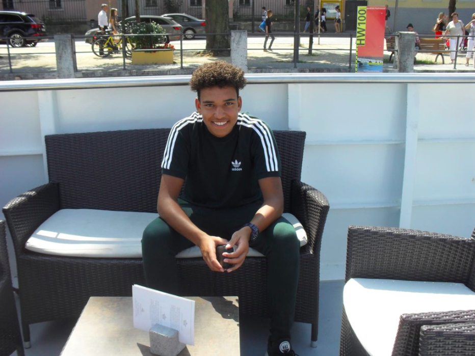

Dit gedeelte van mijn portfolio gaat over wie ik ben. Mijn naam is Giovanni Caridad Vermoen ik ben 15 jaar oud. In het volgende stukje krijgen jullie meer te weten over wie ik ben en wat ik doe. Ik heb een hele fijne jeugd gehad, ik ben opgegroeid met mijn broertje en mijn ouders in een dropje genaamd s-Gravendeel. Ik zit ook op voetbal bij vvsgravendeel waar ik sinds mijn derde heb gevoetbad en nu nog steeds voetbal. s-Gravendeel is een klein dorpje maar je heb alles wat je nodig hebt je hebt een sportcomplex twee supermarkten een drogist een fietsenmaker een electronica winkel drie kerken en twee basisscholen meerdere kinderopvang en nog wat meer. Ik zelf heb op de basisschool De Bouwsteen gezeten, dit is een christelijke basisschool waar elke ochtend werd gebeden. Op deze school heb ik heel veel vrienden gemaakt waar ik nu nog steeds vrienden mee ben en waar ik mee op voetbal zit en met sommige zit ik zelfs nog op school. De basisschool was een hele goeden tijd met veel uitproberen en kijken wie echte vrienden waren maar gelukkig is alles goed gekomen. Na de basisschool ging ik naar het Insula College Koningstraat in Dordrecht dit is het voortgezet onderwijs waar ik de mavo opleiding ging volgen. Op deze school zit ik op het moment van het maken van deze site nog steeds en volg nu de versnelde route. Deze school heeft er voor gezorgd dat ik veel heb mogen maken.
